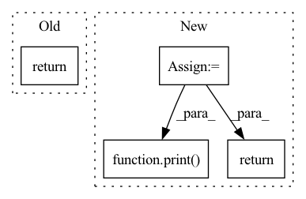

Pattern ID :1787
Before Change
super().__init__()
self.shape = shape
def forward(self, input: torch.Tensor, shape):
return torch.reshape(input, self.shape)
After Change
self.initial_input_shape = None
def forward(self, input: torch.Tensor, shape=None):
shape = shape if shape is not None else self.shape
shape = [x if x != 0 else input.size(i) for i, x in enumerate(shape)]
inp_shape = torch.tensor(input.shape)
if self.initial_input_shape is None:
self.initial_input_shape = inp_shape
elif len(shape) == 2 and shape[-1] == -1:
pass
elif torch.equal(self.initial_input_shape, inp_shape):
pass
print( tuple(shape))
return torch.reshape(input, tuple(shape))
In pattern: SUPERPATTERN
Frequency: 5
Non-data size: 4
Instances Fragment ID: 6971131
Project Name: bbuf/onnx2x
Commit Name: 1c38c809fe2ee466f62fecdf1b9a7c0730b604c8
Time: 2021-02-21
Author: 1182563586@qq.com
File Name: onnx2pytorch/operations/reshape.py
M Class Name: Reshape
N Class Name: Reshape
M Method Name: forward(3)
N Method Name: forward(3)
M Parent Class: nn.Module
N Parent Class: nn.Module
M File Name: onnx2pytorch/operations/reshape.py
N File Name: onnx2pytorch/operations/reshape.py
M Start Line: 10
M End Line: 10
N Start Line: 11
N End Line: 21
Before Change
mol_vecs = torch.stack(mol_vecs, dim=0) // num_molecules x hidden
return mol_vecs // num_molecules x hidden
class MPN(nn.Module):After Change
mol_vecs = torch.stack(mol_vecs, dim=0) // (num_molecules, hidden_size)
semiF_features = np.stack(semiF_features).todense()
semiF_features = torch.from_numpy(semiF_features).cuda()
print( semiF_features.size())
import pdb; pdb.set_trace()
return torch.cat(mol_vecs, semiF_features, dim=1) // (num_molecules, hidden_size)
class MPN(nn.Module): Fragment ID: 6971134
Project Name: aamini/chemprop
Commit Name: 6cf88ed5105a9529f637bb1e562c94c80e4947a3
Time: 2018-10-16
Author: yangk@mit.edu
File Name: mpn.py
M Class Name: MPNEncoder
N Class Name: MPNEncoder
M Method Name: forward(3)
N Method Name: forward(3)
M Parent Class: nn.Module
N Parent Class: nn.Module
M File Name: mpn.py
N File Name: mpn.py
M Start Line: 287
M End Line: 287
N Start Line: 114
N End Line: 292
Before Change
x = self.up_sample_2(x)
out = self.out(x)
return out
class Discriminator(nn.Module):
def __init__(self, num_speakers=4):After Change
x = self.up_sample_2(x)
x = self.conv_1(x)
outputs_reshaped = x[:, :, : -1, :]
print( outputs_reshaped.shape)
return outputs_reshaped
class Discriminator(nn.Module):
def __init__(self, num_speakers=4): Fragment ID: 6971135
Project Name: oscarshu0719/pytorch-stargan-vc2
Commit Name: d26ec3c41594333d1cd8ec492aa9bb5388a57c03
Time: 2020-05-15
Author: vm3y3rmp40719@gmail.com
File Name: model.py
M Class Name: Generator
N Class Name: Generator
M Method Name: forward(4)
N Method Name: forward(3)
M Parent Class: nn.Module
N Parent Class: nn.Module
M File Name: model.py
N File Name: model.py
M Start Line: 266
M End Line: 269
N Start Line: 248
N End Line: 280
Before Change
self.embeddings = nn.Parameter(torch.randn(layers, dim))
def forward(self, x):
return x
After Change
def forward(self, img):
b = img.shape[0]
tokens = self.image_to_tokens(img)
print( tokens.shape)
return tokens
Fragment ID: 6971138
Project Name: lucidrains/glom-pytorch
Commit Name: 48143c36bbc54d0cc7179317fe4ac1f610e9fe70
Time: 2021-03-04
Author: lucidrains@gmail.com
File Name: glom_pytorch/glom_pytorch.py
M Class Name: Glom
N Class Name: Glom
M Method Name: forward(2)
N Method Name: forward(2)
M Parent Class: nn.Module
N Parent Class: nn.Module
M File Name: glom_pytorch/glom_pytorch.py
N File Name: glom_pytorch/glom_pytorch.py
M Start Line: 25
M End Line: 25
N Start Line: 33
N End Line: 36